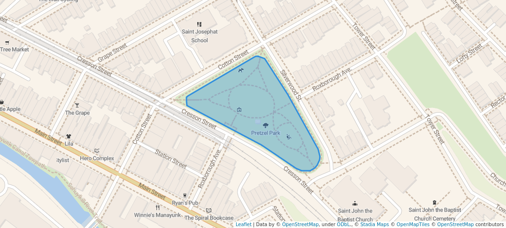

Featured Park Guide: Pretzel Park
A detailed guide for first-time visitors to one of Philadelphia's most pet-friendly neighborhood parks. Back to Pet-Friendly Parks
About Pretzel Park
Pretzel Park is located in the Manayunk neighborhood of Philadelphia. It is one of the few city parks with a designated, fenced off-leash dog area, making it a popular destination for dog owners across the city. The park is well-maintained and community-oriented, with regular events and a welcoming atmosphere.
Location
Pretzel Park
Silverwood Street and Grape Street
Philadelphia, PA 19127
Neighborhood: Manayunk
Park Features
- Fenced off-leash dog area
- Open grassy lawn for relaxing and play
- Benches and seating areas
- Walking paths around the perimeter
- Community events throughout the year

Park Rules
- Dogs must be on a leash outside of the designated off-leash zone.
- All waste must be picked up and disposed of properly.
- Dogs must be vaccinated and wear ID tags.
- Owners are responsible for their dog's behavior at all times.
- Aggressive dogs must be removed from the off-leash area immediately.
Tips for First-Time Visitors
Before You Go
Make sure your dog is up to date on vaccinations. Bring waste bags, fresh water, and a collapsible bowl. Arrive early on weekends to find street parking nearby.
At the Park
Watch your dog closely in the off-leash area, especially on your first visit. Let your dog explore at their own pace. If another dog seems stressed or aggressive, calmly leash your dog and step away.
Getting There
Pretzel Park is accessible by car and by SEPTA. The Manayunk/Norristown Regional Rail line stops nearby at the Manayunk Station.
Official Resource
For general dog park rules in Philadelphia:
Philadelphia Parks & Recreation - Dog Regulations and Best Practices